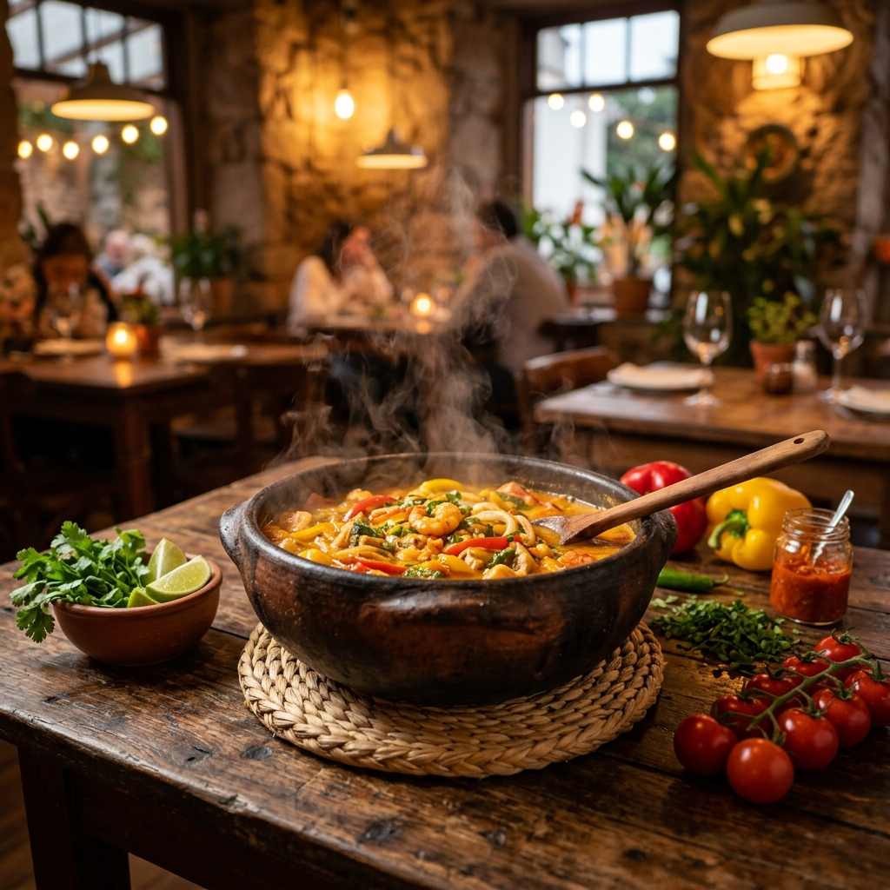

O sabor autêntico da tradição mineira
Receitas passadas de geração em geração, preparadas com o carinho e o tempo que a boa comida exige.
Tradição em cada detalhe
Fundado com o propósito de resgatar as raízes da culinária brasileira, o Panela de Barro utiliza métodos ancestrais de cozimento. Nossas panelas de barro não são apenas utensílios, são o segredo por trás de um sabor inconfundível que abraça o paladar.
Cada prato é uma homenagem à nossa terra, servido em um ambiente que combina o rústico com o conforto moderno.

Ingredientes Frescos
Trabalhamos com produtores locais para garantir o máximo de frescor em cada ingrediente.
Cozimento Lento
O tempo é nosso maior aliado para extrair os sabores mais profundos da nossa culinária.
Ambiente Acolhedor
Um espaço planejado para que você se sinta em casa, com um toque de sofisticação.
Status do Sistema
Integração com infraestrutura AWS via Docker Compose.